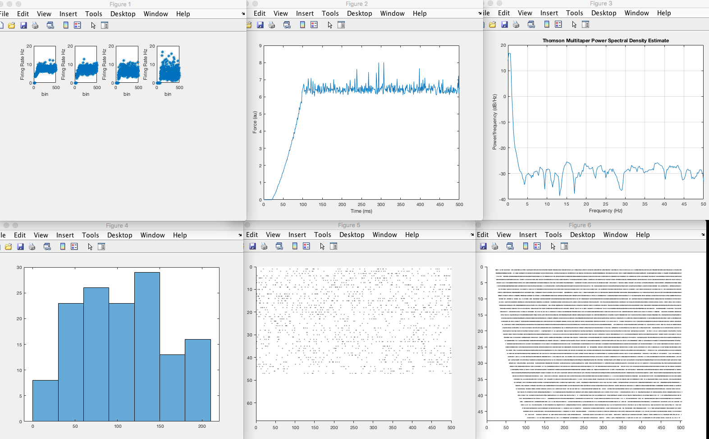
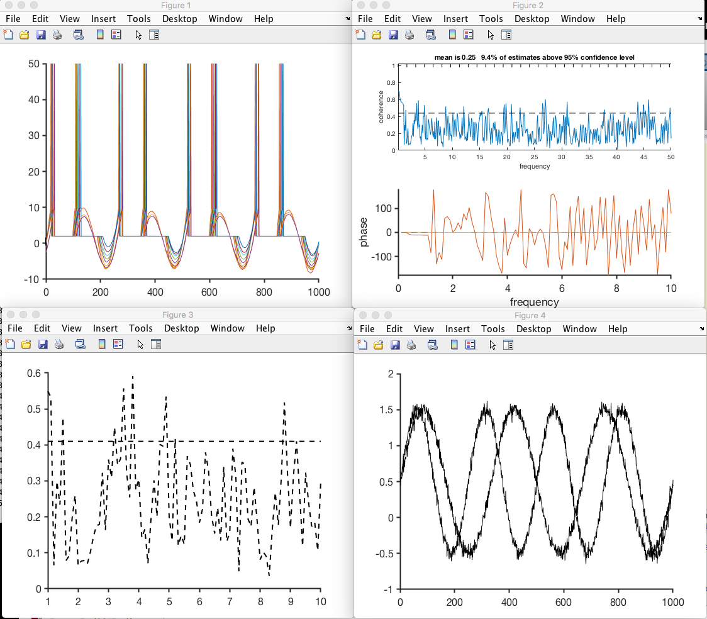

https://www.mathworks.com/matlabcentral/fileexchange/45671-flexible-and-fast-spike-raster-plotting
https://www.mathworks.com/matlabcentral/fileexchange/14866-logb typing CompExpNeuro at the matlab command prompt will generate these images:  Note that cmtm from https://www.mathworks.com/matlabcentral/fileexchange/22551-multi-taper-coherence-method-with-bias-correction is required for New_coher.m which generates the following graphs:  the last of which is similar to Figure 7D in the paper.